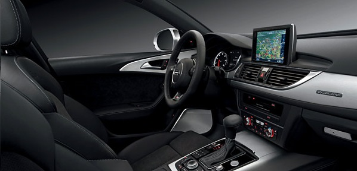
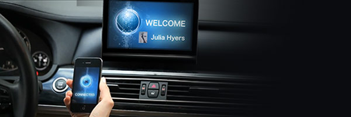

MISS – Blagojević je lider na tržistu „connected car solutions“.
Ugrađujemo „infotainment“ rešenja koja nude kompletne informacije, zabavu i komunikaciju.
Nudimo 3D i proširenu navigaciju, multimedijalnu podršku „smart“ aplikacije za integraciju uređaja,
brzo povezivanje, intuitivno i multi-modalno korišćenje interface-a, kao i korišćenje usluga nove generacije „automotive cloud services“.
|  |
Scalable, Next‐Generation PlatformPlatforma koja nudi izbor operativnih sistema I softverskih ekosistema (QNX, Genivi, Linux, Android, HTML5, i drugi) u kojima se preuzimaju aplikacije, a koji će obezbediti da sistem ostane “future proof”. Platforma podržava potpunu internu i eksternu vezu, uključujući “mirroring”, Bluetooth, WiFi, LTE, čak i V2X solutions. Platforma poseduje obezbeđenje 5+1 multi-layer security framework, najbolje u klasi, koje pruža potpunu sigurnost i maksimalnu povezanost, sa “over-the-air updating”. |
 |
Smart Essentials PlatformSmart Essentials platform po racijonalnim cenama nudi obilje funkcija za integraciju smart telefona u automobilski interface,sa prilagodljivim opcijama povezivanja za razna tržista i klase automobila. Koristi multi core system on chip hardware, za njeno dizajniranje je korišćen flexible Linux OS framework. Usklađuje i omogućava korišćenje najnovijih tehničkih mogućnosti smart telefona, uključujući CarPlay i Android Auto, podržava MirrorLink integration, i omogućuje jednostavno korišćenje popularnih mobilnih aplikacija. |